| 日付 | 2020年8月2日（日） - 2020年8月6日（木） | ||||
|---|---|---|---|---|---|
| 山域 | 妙高周辺 | ||||
| メンバー | 家族（妻、長女・9歳、長男・7歳） | ||||
| 山行形態 | 子連れ4泊5日キャンプ | ||||
| アクセス | 車 | ||||
| ルート (Map2) |
|
3日目
6時起床。タープのロープでセミが羽化している。羽化したてで、まだ緑色だ。
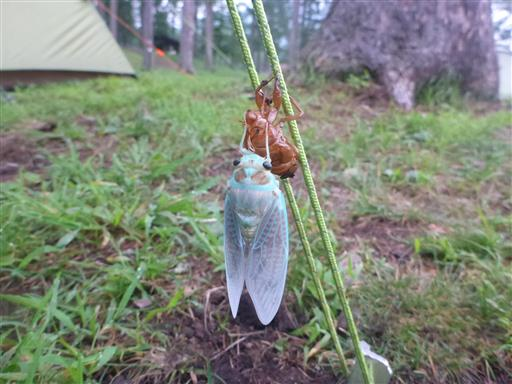
本日は黒姫山登山。大橋登山口に車を停める。標高1140m。
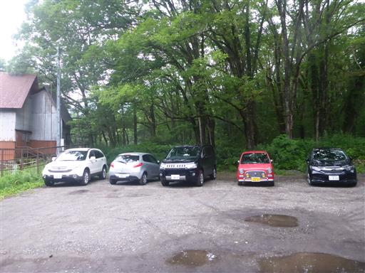
歩いて新道登山口に移動。こちらは3台しか車を停めることができず、すでに埋まっている。
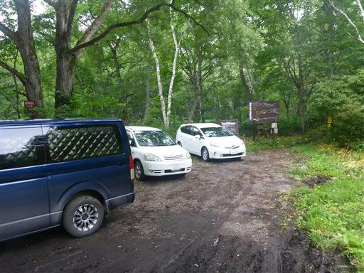
登山開始。
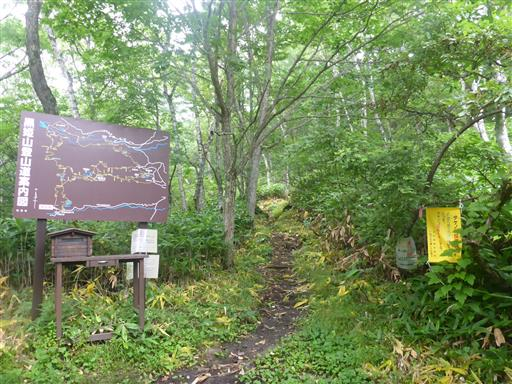
歩いてすぐのところに種池がある。
水量が多いのか道の途中まで水があり、すっきりと見渡せない。
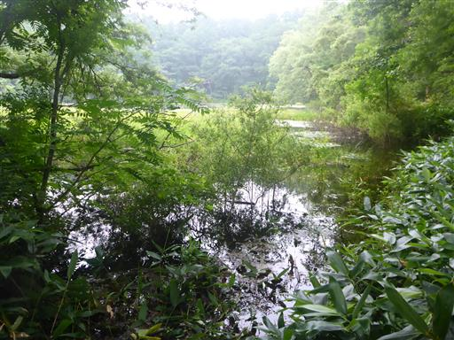
平坦な道が続く。この山は麓が広くてアプローチが大変だ。

古池に到着。池と言うより草原か湿原だ。
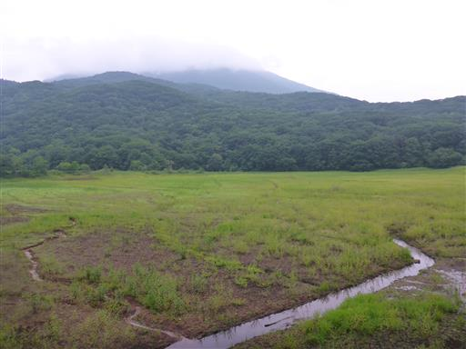
この池は工事中で重機などがあり、雰囲気が良くない。
自然の池ではなく農業用のため池らしい。
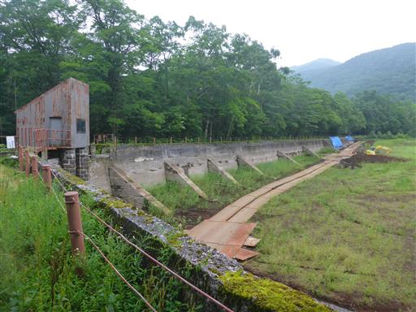
池の側にひっそりと祠がある。草だらけで、長い間誰も近づいていなさそうだ。
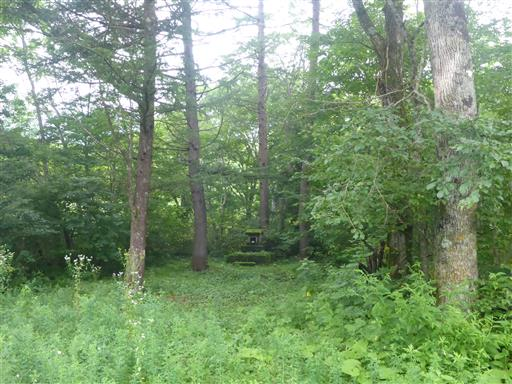
コオニユリ。
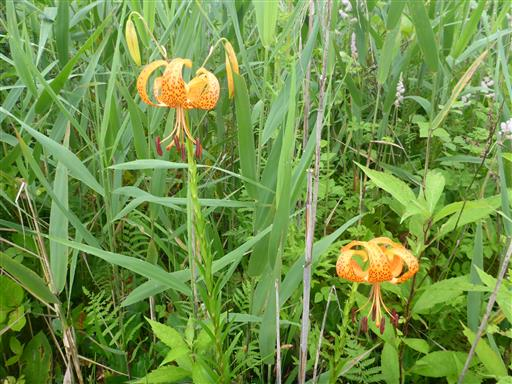
少し視界が開ける。まだあまり標高が上がっていないため下界からの景色と大差ない。
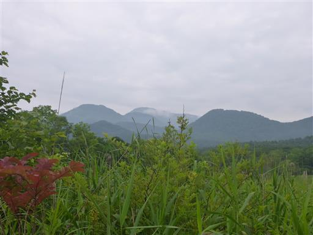
周囲は深い森に覆われている。町の黒姫山の案内にはプチ屋久島の様と書かれている。
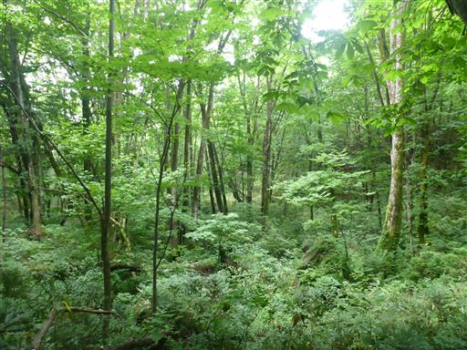
側に小さな沢が現れる。水が冷たくて気持ちが良い。

泥んこの登山道。木が並べられているので助かる。
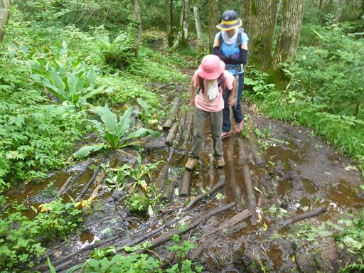
倒木を乗り越える。まるでアスレチックのようだ。上を行くか下を行くか迷う。
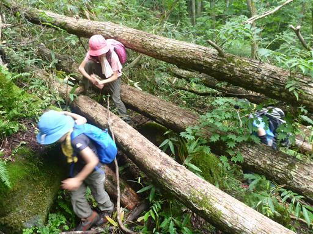
アジサイの花が咲いている。
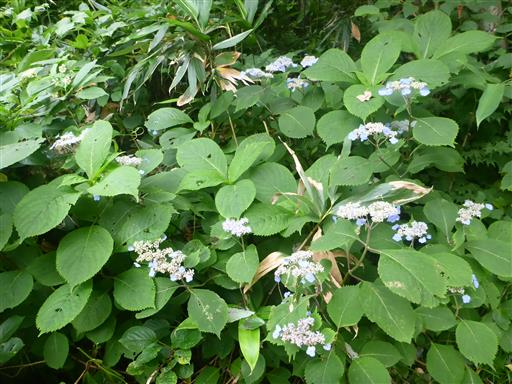
この辺りはブナの木が多い。
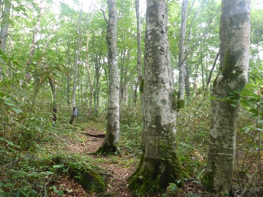
小さなセミの抜け殻。キャンプ場で見たものよりはるかに小さい。別の種類なのだろう。
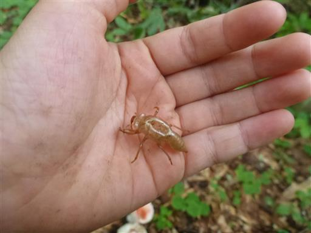
ブナの巨木。
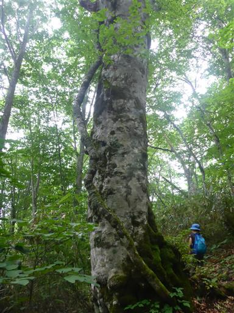
新道分岐点に到着。妻の体調があまり良くなくここから下山するとのことで、
ここから3人で山頂を目指すことにする。
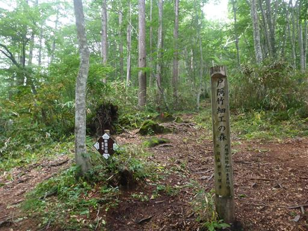
3人になって少しペースが上がる。
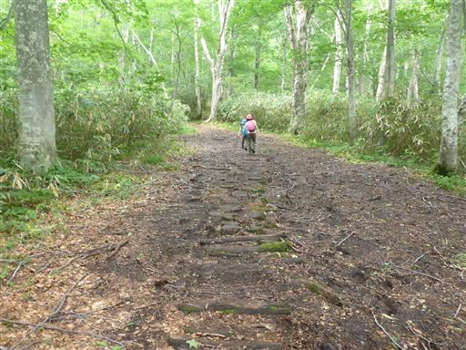
ブナの木に「戸隠分」と削られている。一体何だろう？
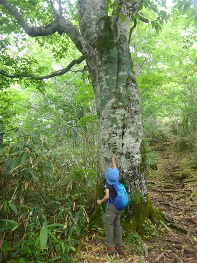
しなの木の巨木。
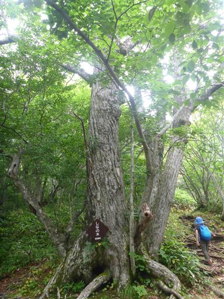
林床が笹原になる。傾斜がきつくなってきて、辛い登りが始まる。

ヨツバヒヨドリ。
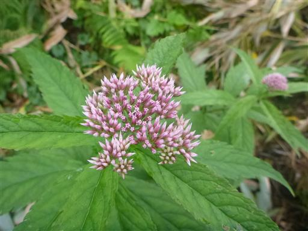
雰囲気の良い針葉樹の森を歩く。
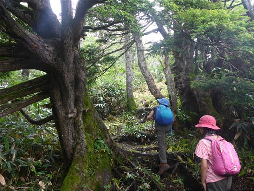
樹間から小黒姫の姿が見える。思った以上に良いペースで標高の高いところまで来れている。
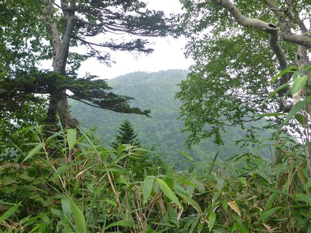
次第にきつかった傾斜が緩んでくる。黒姫山の外輪山の尾根に乗ったようだ。
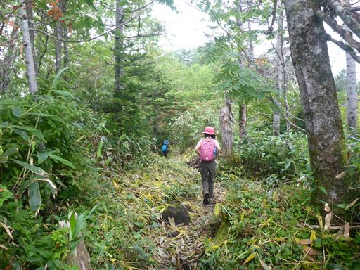
しらたま平に到着。
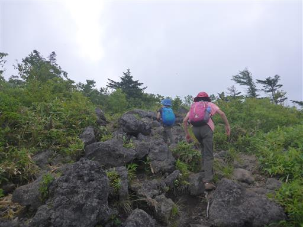
ここからは大展望が広がるはずだが、見える山と言えば冴えない地蔵山くらいだ。
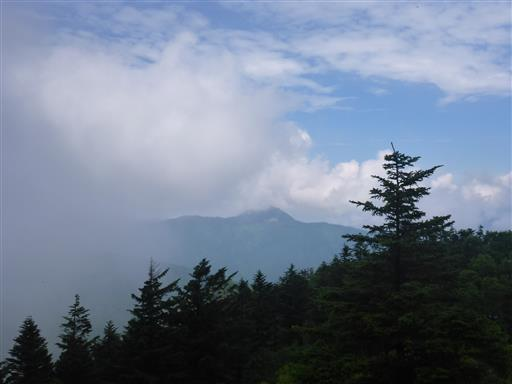
あとは緩やかなアップダウンがあるのみ。
地図で中央火口丘と外輪山がある姿を見て、草木のない岩だらけの山頂部を想像していたが、
いずれも深い森に覆われていて、想像と全然異なっている。
最後に噴火してから長い年月が経っているのだろう。
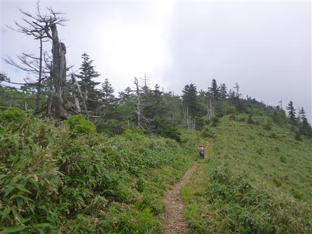
道端に咲くハクサンオミナエシ。
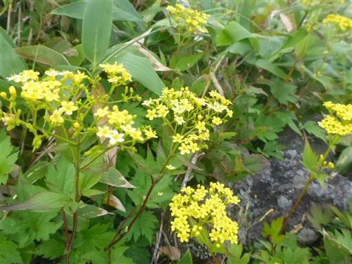
存在感のある枯木。
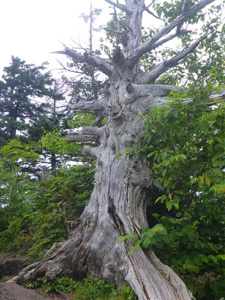
岩場を下りられるよう、枯木の根にステップが刻まれている。
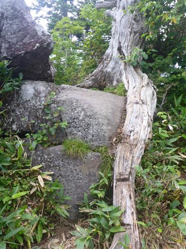
外輪山の最高点である黒姫山山頂が見えてきた。
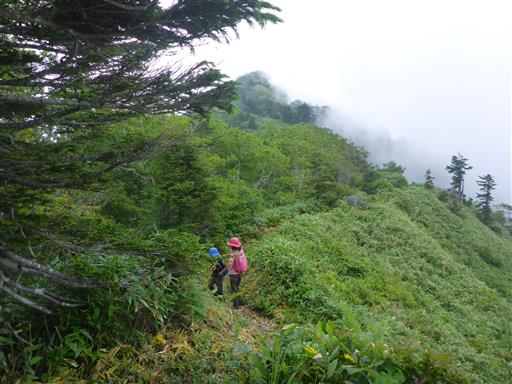
右側から雲が迫ってくる。
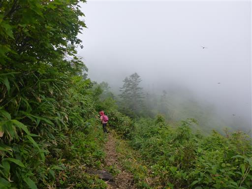
最後の山頂に通じる道だけ再び急斜面になる。
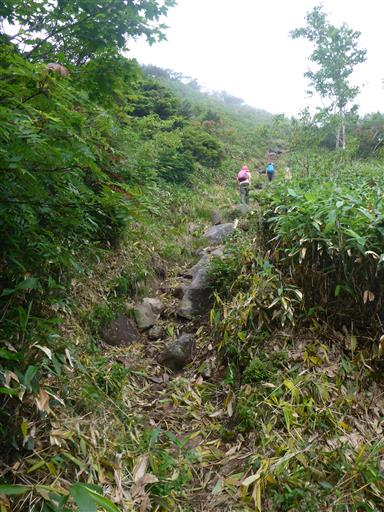
もう小黒姫より標高が高くなった。
全体像が見渡せないので、ここから見ると中央火口丘には見えずただの丸い山に見える。
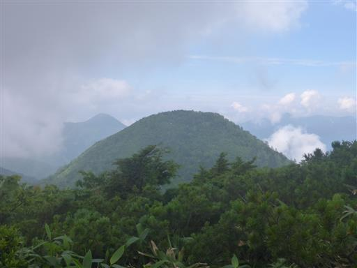
ラストスパート。小さな岩場を登る。
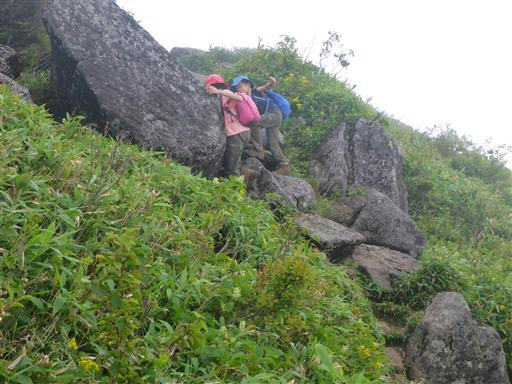
黒姫山山頂に到着する。標高2053m。
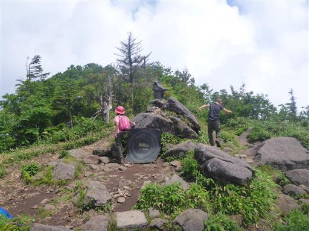
歩いてきた外輪山を振り返る。
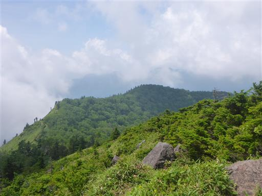
展望が広がってそうな南東方向は雲に覆われており、
それ以外の方向は木が生い茂っていて展望が得られない。
わずかに木の間から山らしきものが見える。あの丸い頭は焼山の辺りだろうか？
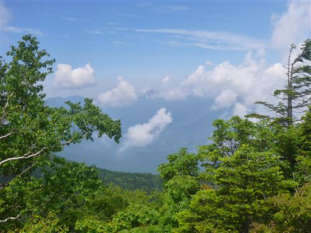
次々と雲が湧いてきて残念ながらほとんど展望は得られない。
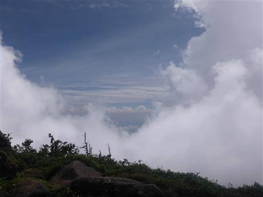
昼食休憩をとったら下山開始。小黒姫がきれいに見えている。
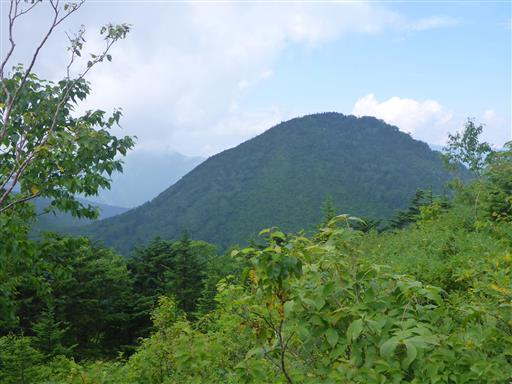
山頂直下の分岐点で右に折れる。ここから登りと異なる道を歩く。
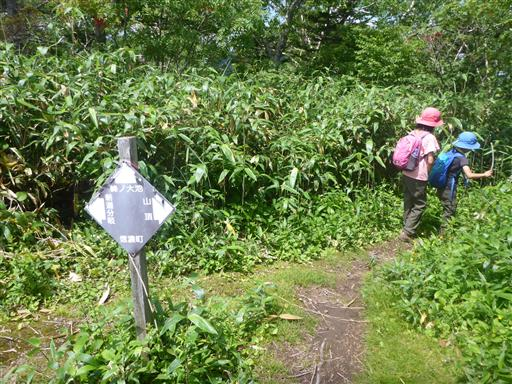
外輪山から内側に下りる道は苔生した岩が多く滑りやすい。
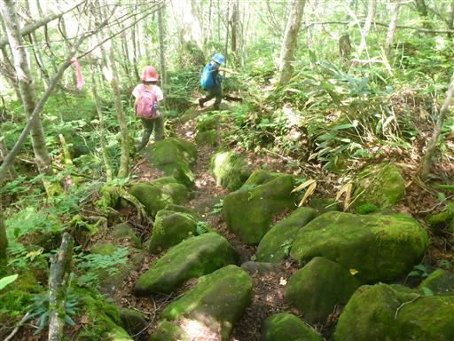
オサバグサの下からヒキガエルが頭を出している。
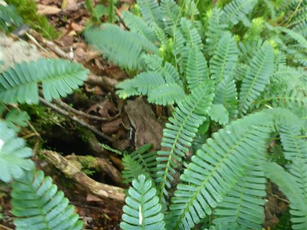
外輪山と中央火口丘のあいだの凹部に下りてくる。
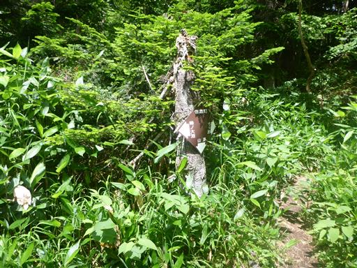
左に曲がってすぐに峰ノ大池が見えてくる。
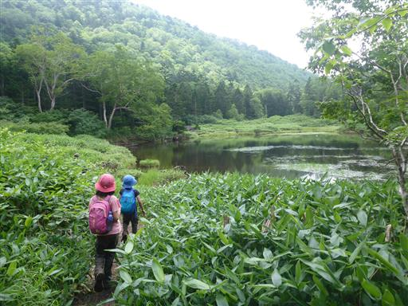
大池と言うだけあって比較的大き目の池だ。
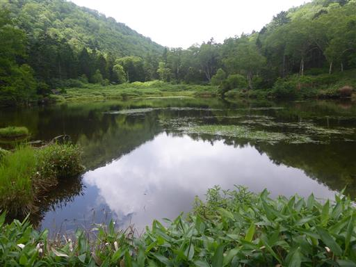
峰ノ大池の背後に小黒姫が聳えている。
この山には登山道がないが、積雪期に登る人はいるようだ。
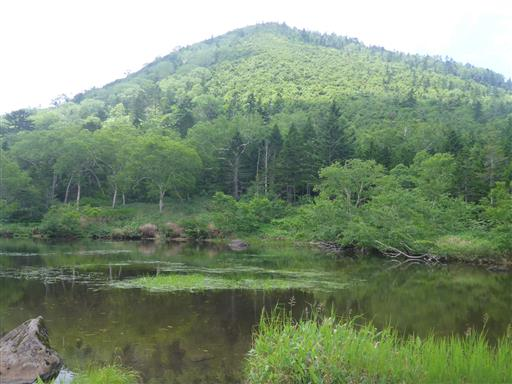
小さな一本橋。
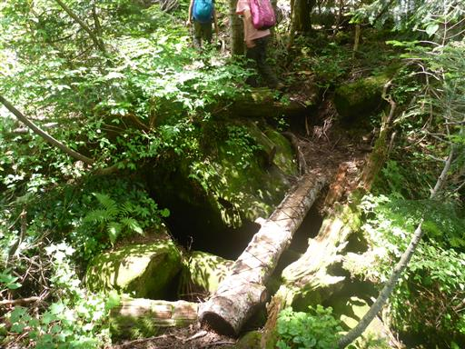
周囲は苔生した世界。鬱蒼とした森だ。
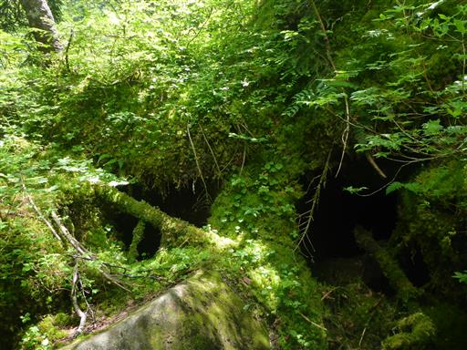
大岩の間を通り抜ける。この辺りから登山道が難しくなってくる。
岩にしがみついて生える木。
足元にギンリョウソウ。

深い森の中を歩く。周囲に人影は全くない。
大岩を乗り越える。
岩から下りる場所は手足が長くないと難しい。
子供2人と下るとなかなかスピードが上がらない。
足元にツルアリドオシの花が咲いている。
オレンジ色のキノコ。
古くて壊れそうな木橋を渡る。
西登山口分岐を過ぎるとようやく簡単な道になる。
朝に通過した分岐点まで戻ってくる。あともう少しだ。
ここからまた、登りとは別の道を下る。
道にはなぜか土嚢が敷き詰められている。
途中で林道に出てくる。あとはテレビゲームのお話をしながら林道を歩く。
ゲートを越える。人が通る隙間もない厳重なゲートだ。
駐車場に戻ってくる。コースタイム8時間の長い登山だったが、頑張って歩き切った。
黒姫山は地味だが、樹林帯の美しい山だった。

本日もむれ温泉 天狗の館に行く。
温泉から戻ってくると、置いておいたザックでセミが羽化している。
まだ羽が伸び切っていない。

遠くに夕日に照らされた積乱雲が見える。
夜に雷の音が聞こえていたが、幸い近くには来ず、雨も降らなかった。